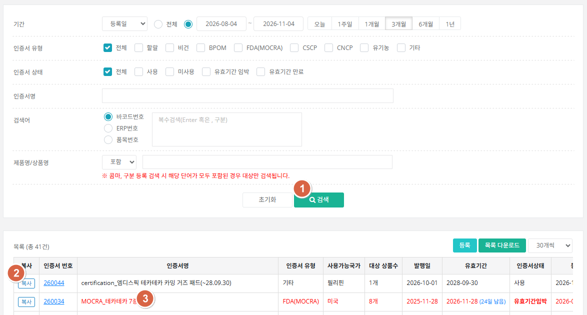
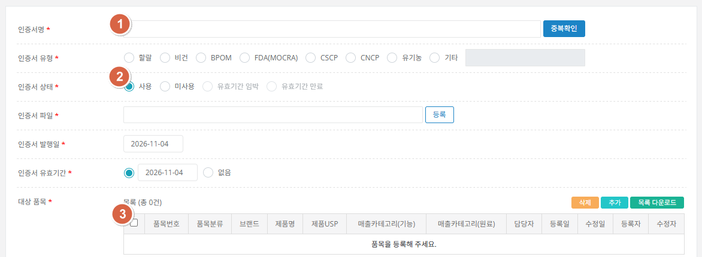

할랄·비건 등 인증서 파일과 대상 품목을 등록합니다. 인증서의 대상 품목으로 등록하면 해당 품목 상세의 특이사항에서 인증서 정보를 확인할 수 있습니다. 인증 관리 주체 부서가 각자 담당합니다.

| ① 검색 | 인증서명·검색어(바코드/ERP번호/품목번호)·제품명 등 등록 정보 기준으로 검색할 수 있고, 인증서 안에 등록된 대상 품목 정보 기준으로도 검색됩니다. |
|---|---|
| ② 복사 | [복사]를 누르면 선택 인증서 정보가 신규 인증서로 등록됩니다. 단, 유효기간은 비워지고, 대상 품목은 삭제된 상태로 복사되며 나머지 정보는 동일합니다. |
| ③ 강조 표시 | 유효기간이 90일 이내인 건은 강조(빨간색) 표시되고, 이미 만료된 건은 비활성(회색)으로 표시됩니다. |

| ① 인증서명 | [중복확인] 후 등록합니다. 같은 이름은 중복 등록할 수 없습니다. |
|---|---|
| ② 인증서 상태 | 사용 / 미사용 / 유효기간 임박 / 유효기간 만료. 임박·만료는 직접 고르지 않고 시스템이 자동으로 바꿉니다.
|
| ③ 대상 품목 | 등록된 품목 대상으로 품목 상세에서 해당 인증서 정보를 확인할 수 있습니다. 단, 인증서가 만료된 건은 제외됩니다. |